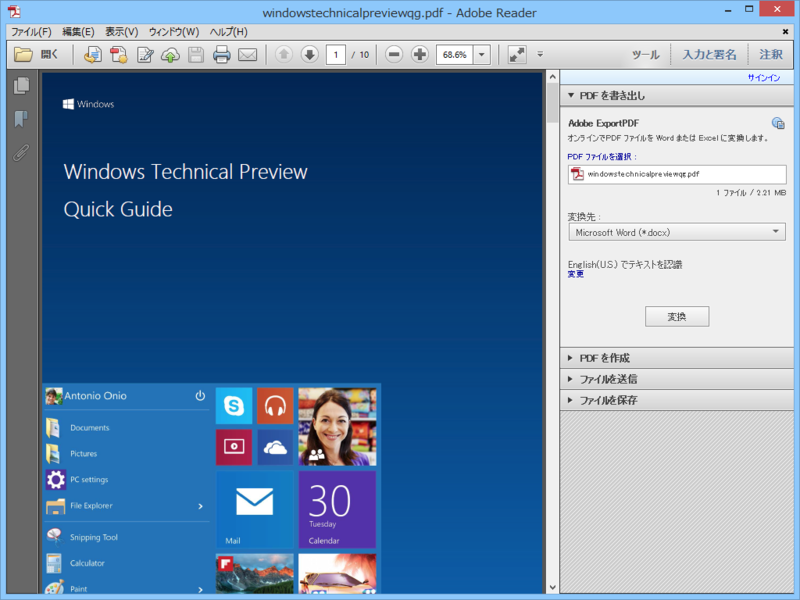

Windows Technical Preview Quick Guide
公開日：

Windows Technical Preview Quick Guide（英語版）が公開されています（Download the Windows 10 Preview User Guide - Softpedia）。
- http://news.microsoft.com/download/presskits/windows/docs/windowstechnicalpreviewqg.pdf（PDF形式、直接リンク）
Windows 10 の新機能のさらっとした説明と、フィードバックツールの使い方がメインですかね。